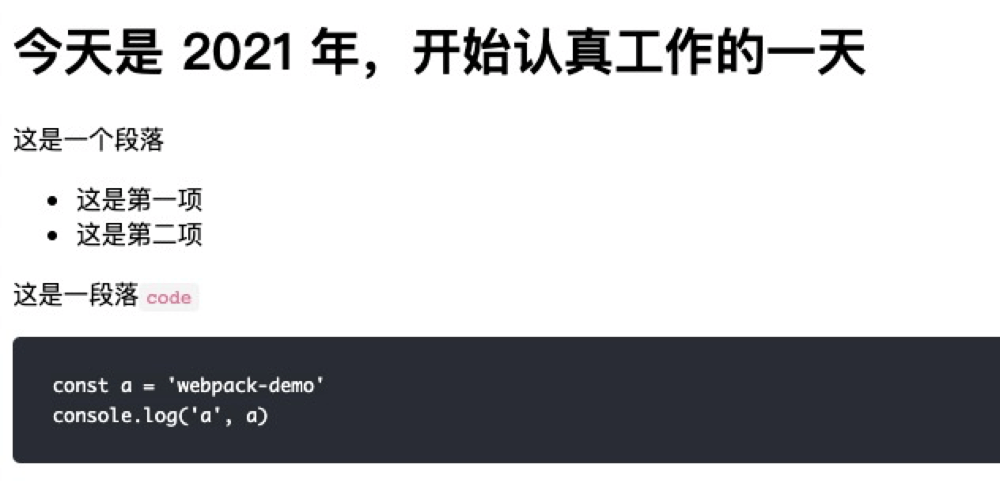

从零开始手写一个简单的 loader（二）
这是关于 webpack 的一些扩展。
从零开始手写一个简单的 loader（一） 里面已经生成了 html 字符串并且渲染到了页面。但是我们发现其样式无美感，那这一期我们增加一些样式，将生成的 html 渲染的像咱们博客中的那样。
首先我们需要的 loader 是 css-loader 和 style-loader，我们开始安装这两个依赖。css-loader 用于将 css 可以模块化的引入，并将其转换为 js 代码，style-loader 用于将上一步生成的 js 中包含的 css，生成可用的样式并且，通过生成 style 标签插入到 head 标签中。
- 安装依赖
1 | |
我们接着来配置 webpack.config.js 文件，在 module 的 rules 里再加上一个匹配项:
1 | |
- 创建
css文件
紧接着我们在 src 下创建一个 index.css 文件，添加如下 css 样式：
1 | |
- 引入样式文件
然后我们回到 main.js 里将 index.css 引入：
1 | |
现在我们再去终端运行 npx webpack，再刷新页面，发现生成的 html 已经被我们加上了样式。

截至目前我们已经完成了一个可以生成 html 的 loader，并且已经为其加上了样式。
我们目前用的是 style-loader 是将生成的 css 通过 style 的方式插入到 head 标签中。其实我们还有一种办法，将 css 提取出来，作为单个文件通过 link 标签加载。话不多说，我们继续。
- 提取
css
要提取 css 样式文件，webpack4.0 之后用的插件叫: mini-css-extract-plugin
我们来安装这个插件:
1 | |
因为 style-loader 和 mini-css-extract-plugin 插件不能共存，所以我们需要删除 webpack 中之前配置的 style-loader，添加 mini-css-extract-plugin，具体修改如下：
webpack.config.js
1 | |
我们再去终端运行 npx webpack，刷新页面发现样式没改变再去看开发人员选项，发现样式文件目前是通过 link 标签引入的，证明我们的提取 css 配置是生效的。

至此，我们一个简单的 loader 就全部完成了。
本博客所有文章除特别声明外，均采用 CC BY-SA 4.0 协议 ，转载请注明出处！